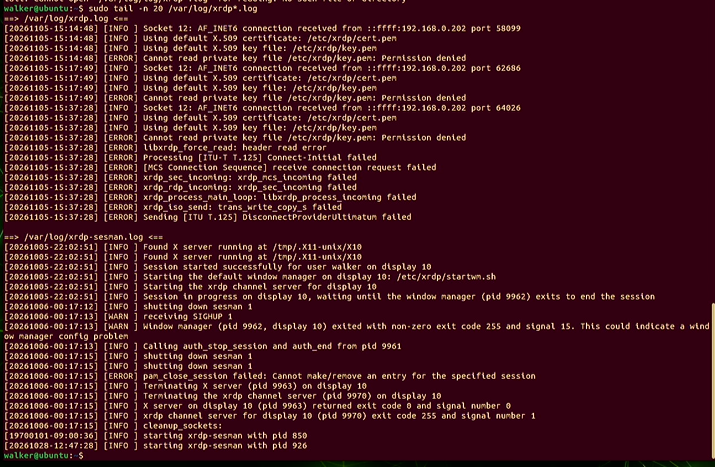
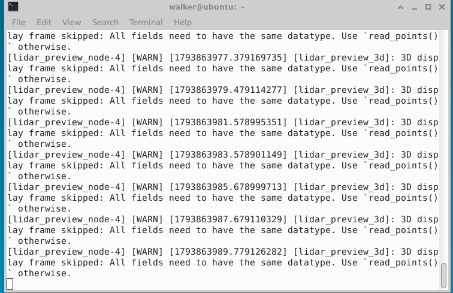
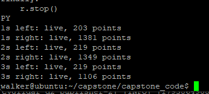
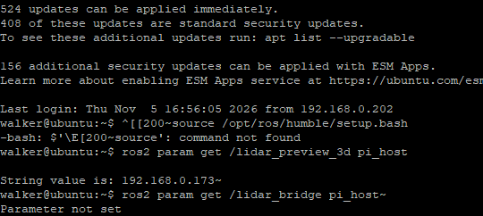
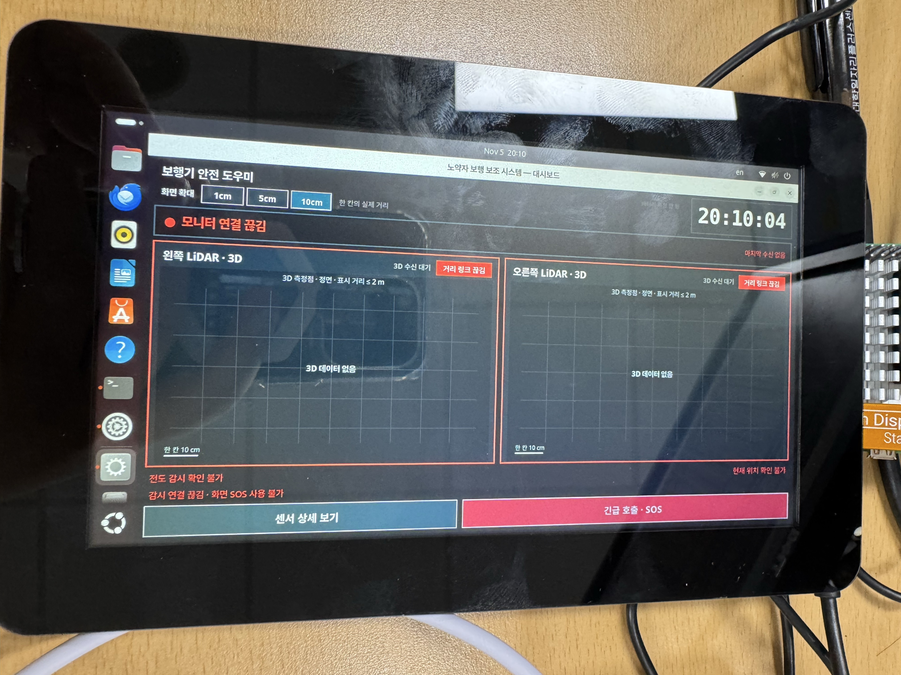

이력 문서: 아래는 2026-11-05 당시 기록입니다. 2026-11-06 후속 트러블슈팅과 최신 현황을 확인하세요. 과거 주소와 미완료 표시는 당시 상태입니다.
보행기 GUI·라이다·원격 접속 트러블슈팅 기록
기록 기준: 2026-11-05, 한국 시간. 이번 대화의 사용자 화면·실행 결과·사용자 확인과 프로젝트 코드를 정리했다.
최신 상태: 사용자가 GUI 개별 점검 전체 완료를 확인했다. 남은 순서는 GPS 검사 → IMU 검사 → 전체 통합 검증이다. 최종 점검 현황과 완료 조건을 기준으로 다음 작업을 진행한다. 아래 문제별 조치와 화면은 그 과정의 이력이다.
읽는 방법: 먼저 증상 색인에서 해당 항목을 찾는다. 각 항목은 증상, 원인, 해결, 확인 범위를 같은 순서로 적었다. 명령 블록은 해당 장치에서 한 줄씩 실행한다. 이 문서 전체의 명령을 순서 없이 한꺼번에 실행하지 않는다.
1. 현재 구성과 확인 범위
장치와 경로
- 라즈베리: 사용자
yu, 호스트yu-desktop, 마지막 확인 IP192.168.0.173. 최신 코드/home/yu/capstone/capstone_code, Python/opt/walker/venv/bin/python. - 젯슨: 사용자
walker, 호스트ubuntu, 마지막 확인 IP192.168.0.191. 최신 저장소/home/walker/capstone, ROS Humble/opt/ros/humble. - 제조사 드라이버 작업공간:
/home/walker/d2_ws. 브리지 작업공간:/home/walker/walker_bridge_ws. 실제 빌드 대상 패키지:/home/walker/walker_bridge_ws/src/walker_lidar. - 라이다: CygLiDAR D2 두 대. 고정 장치 이름
/dev/lidar_left,/dev/lidar_right. 좌 채널 0·우 채널 1을 시작 시 요청한다. 이번 젯슨 시작 로그는 F/W 0.3.5, H/W 0.2.2였다.
위 IP는 이번에 확인한 값이다. 이후 재접속·다른 공유기 사용·고정 IP 전환 시 hostname -I로 재확인한다.
완료와 남은 작업
- 실행 결과 확인: 최신 코드 다운로드, 젯슨 패키지 빌드, 두 실행 항목 등록, USB 두 장치 인식, 좌우 고정 이름 생성, 채널 0/1 시작 요청, 젯슨 내부 양쪽 3D 프레임 수신.
- GUI 점검 완료: 실물 가로 화면과 양쪽 점군 표시를 거쳐, 사용자가 GUI 개별 점검 전체 완료를 최종 확인했다.
- 다음 개별 검사: 실제 GPS 수신·위치와 IMU 자세·가속도·통신 설정·상실/복구를 검증한다.
- 마지막 통합 검증: 모든 센서·안전 감시·GUI를 함께 실행하고 안전 기능, 최종 네트워크, 중단·재연결·재부팅과 기존 계획의 30분 운용을 확인한다.
- 확인 경계: GUI 완료를 GPS·IMU·거리 경고·전도 감시·SOS·보호자 알림 검증 완료로 확대하지 않는다.
통신 경로
젯슨 거리 브리지 ── UDP 9100 ──> Pi 안전 감시
젯슨 3D 표시 노드 ── UDP 9103 ──> Pi GUI 점군
Pi 안전 감시 ── UDP 9101 ──> Pi GUI 상태
Pi GUI 버튼 ── UDP 9102 ──> Pi 안전 감시3D 표시와 안전 판정은 별도 경로다. 화면에 점이 나와도 안전 감시가 꺼져 있으면 모니터 연결 끊김이 표시될 수 있다.
2. 증상으로 바로 찾기
- 화면이 세로로 나오거나 잘림 · 점이 크고 화면 기준이 흔들림 · 센서를 고정해도 점군이 흔들림
- 점군이 작음·2m 의미·9,600점보다 적음 · 점이 대부분 주황색 · 라이다 두 대 간섭 · USB가 열리지만 프레임 없음
- TigerVNC와 원격 데스크톱 혼동 · xrdp 개인 키 권한 오류 · 원격 화면과 외장 화면이 다름
- Pi 원격 인증 정보가 비어 있음 · Session already running·키보드 입력 불가
- 명령 오타·경로 오류 · 두 명령이 붙음·Not a directory · 붙여넣기에 제어문자·물결표가 섞임
- Git 저장소가 아님·서비스가 없음 · Python 환경과 COM 포트 혼동 · 잘못된 장치 창에서 명령 실행
- USB 고정 이름 없음·한쪽만 보임 · pull했는데 실제 코드가 바뀌지 않음 · main 푸시 거절·브랜치 반영 여부
- All fields need to have the same datatype · Node not found · Pi 수신 주소가 127.0.0.1
- Name or service not known · 모니터 연결 끊김과 3D 수신 대기
- 다음 작업: 랜선·고정 IP · 장치별 다시 실행하는 명령 · 근거 화면·문서
3. GUI와 라이다 표시
TS-01. 화면이 세로로 나오거나 GUI 일부가 잘림 — 가로 표시 확인
증상: 7인치 화면이 세로 방향이어서 가로 GUI가 잘렸다. 이후 사진에는 가로 GUI와 하단 버튼이 보였으나 Ubuntu 도크·제목줄이 남아 있었다.
원인: GUI 목표는 가로 1024×600인데 실제 데스크톱 방향·해상도·배율 또는 창 장식이 사용할 수 있는 화면 영역과 맞지 않았다.
해결: 실제 Pi 모니터의 설정 → 디스플레이에서 화면이 가로로 보이는 회전 방향을 선택한다. 배율 100%, 지원되는 경우 가로 기준 1024×600으로 맞추고 적용 → 변경 사항 유지를 누른다. 패널 기본 방향에 따라 Landscape 대신 세로 왼쪽·오른쪽 회전이 필요할 수 있다. GUI 창 선택 후 F11로 전체 화면을 전환할 수 있다.
확인 범위: 당시 실물 사진에서 가로 배치·하단 버튼 표시를 확인했고, 이후 사용자가 GUI 개별 점검 완료를 최종 확인했다. 이 문서에서 해상도·터치 오차의 별도 계측 수치를 새로 주장하지 않는다. 지원 목록에 없는 해상도를 임의로 강제하지 않는다.
TS-02. 점이 크고 기준점·거리 가이드가 움직임 — 표시 방식 수정
증상: 점이 커서 장애물 형태가 뭉쳤다. 작은 변화에도 화면 중심과 거리 가이드가 늘었다 줄었다 했다. 3축 모형과 여러 시점 선택은 소비자 화면에 불필요했다.
원인: 큰 점과 데이터 범위에 따라 바뀌는 표시 배율·중심은 실제 물체 움직임과 화면 자체 움직임을 구분하기 어렵게 한다.
해결: 점 지름 2px, 정면 직교 투영, 고정 중심·고정 배율로 바꿨다. 3축 화살표·원점 모형과 시점 선택 줄을 숨기고 점군 영역을 키웠다. 큰 시계를 배치하고 화면 확대의 1cm·5cm·10cm만 남겼다. 기본 한 칸은 10cm다.
화면 정리 결정: PC USB 시험의 상단 시험 문구·판정 미실행 행·거리 색 설명 등을 정리해 점군 공간을 확보했다. 실제 GUI의 안전 상태는 별도 표시한다. 사용자는 소비자 화면의 추가 수신 진단 기능을 제외하기로 했으며, 이 문서의 터미널 진단은 개발·장치 점검용이다.
확인 범위: 코드·PC 레이아웃 검사와 실물 가로 GUI 사진으로 적용을 확인했다. 센서 측정 잡음이나 움직임을 제거하는 자세 보정·지도 고정 기능은 아니다.
TS-03. 고정한 USB1의 점군도 흔들림 — 측정 변동과 표시 변동 구분
증상: 센서를 고정했는데도 점군이 흔들렸다. 처음에는 물체가 약 10cm 앞이라고 했으나 후속 측정 당시 위치는 바뀌어 있었다.
확인된 결과: 독립 스레드로 동시 → USB1 단독 → 동시를 각 6초 측정했다. USB1 유효 프레임은 91/90/91개, 체크섬·페이로드 오류는 모두 0개였다. 중앙 10×20픽셀의 연속 유효 거리 차이 중앙값은 11/10/10mm, 95백분위는 30/27/29mm였다. 당시 중앙 거리 중앙값은 약 258/283/275mm였다.
해석: 이 조건에서는 USB2를 꺼도 변동이 크게 줄지 않았다. 그 실험만으로 두 장치 간섭이 주원인이라고 확정할 수 없다. 실제 물체 위치가 바뀌었으므로 처음의 10cm와 직접 비교해 거리 보정 오류라고 단정할 수도 없다. 후속 배치에서 채널 분리 효과가 관찰된 사실과는 구분한다.
대응: 화면 자동 확대·중심 이동은 고정하고, 실제 잡음은 원시 표시로 유지했다. 시간 필터는 이번에 적용하지 않았다. 필요하면 고정 표적·같은 거리·같은 배치에서 단독/동시/채널 조건을 비교하고 필터의 지연도 함께 평가한다.
진단 주의: 이전 단독 구간의 직렬 수집 지연·체크섬 오류가 있던 진단 결과는 비교에서 제외했다. GUI 자체는 원래 포트별 독립 스레드를 사용했다.
TS-04. 점군이 작거나 9,600점보다 적음·2m가 가로세로 최대인지 혼동 — 의미 정리
증상: 점군이 화면 가운데 작게 모였고, 전체 데이터를 받는지와 2m가 화면 가로·세로 범위인지 질문했다.
원인: 물체 크기·거리·화각·확대율과 유효점 필터가 표시 크기와 점 수에 영향을 준다. 현재 프로그램의 3D 표시 거리 제한과 화면의 가로·세로 길이는 다르다.
현재 동작: D2의 160×60, 최대 9,600픽셀 중 거리 0.05~2.0m 범위의 유효점 전체를 선택한다. 오류값·범위 밖 값은 제외한다. 최대 10Hz로 최신 프레임을 표시하므로 모든 시간 프레임을 저장·재생하는 기능은 아니다. 이 2m는 현재 표시 경로의 제한이며 센서의 모든 동작 모드 성능을 일반화한 설명은 아니다.
화면 해석: 기본 10cm 눈금보다 5cm는 2배, 1cm는 10배 확대다. 확대하면 화면 밖 점은 잘리고 같은 픽셀에 여러 점이 겹칠 수 있다. 화면 N/M점은 그린 점과 선택된 유효점의 관계다. 수신점 수와 화면에서 구별되는 점 수가 항상 같지는 않다.
확인 범위: 젯슨 실기에서 좌 203/219/219점, 우 1381/1349/1106점이 각각 1·2·3초에 live로 수신됐다. 사용자는 점 수에 문제가 없다고 확인했다. PC 검사에서 좌우 각 9,600점 전송도 확인했으나 이를 모든 실제 장면의 기대 점 수로 보지 않는다.
TS-05. 가까운 물체도 대부분 주황색 — 거리 색 기준 수정
증상: 2m 범위를 기준으로 색을 나누니 가까운 물체 사이의 거리 차이가 잘 보이지 않았다.
원인: 가까운 구간에 충분한 색 변화가 배정되지 않았다.
해결: 고정 거리 색을 10cm 파랑, 20cm 청록, 35cm 초록, 60cm 노랑, 1m 주황, 2m 분홍으로 보간한다. 가까운 구간의 구분을 늘리고 프레임마다 색 범위를 바꾸지 않는다.
확인 범위: 표시 코드와 USB 시험 GUI에 반영했다. 이 색은 거리 시각화이며 위험 등급이나 안전 판정 자체가 아니다.
TS-06. 두 라이다 동시 사용 시 간섭 의심 — 좌우 채널 분리
증상: 두 장치가 같은 채널로 동작하면서 간섭하는 것 같다는 보고가 있었다.
대응: PC USB 도구와 실제 젯슨 런치에서 왼쪽 채널 0·오른쪽 채널 1을 요청하도록 바꿨다. PC 도구는 재연결 때도 설정을 요청한다. 젯슨 시작 로그에서도 FREQUENCY CH.0, FREQUENCY CH.1 요청을 확인했다.
확인 범위: 사용자가 USB 채널 분리 후 간섭 감소를 확인했다고 보고했다. 채널 명령 전송·시작 로그 확인과 광학 주파수 계측·장치 내부 설정 읽기 응답은 구분한다. 적외선 레이저의 파장을 임의로 바꾼 변경은 아니다.
재발 방지: 실제 드라이버를 새 런치로 다시 시작해야 채널 요청이 적용된다. start_drivers:=false는 기존 드라이버의 채널을 바꾸지 않는다. 장치 ROM 저장이나 전원 재인가 후 채널 유지가 검증됐다고 보지 않는다.
TS-07. COM 포트가 열리지만 D2 3D 프레임 없음 — SDK 시작 순서 적용
증상: Windows COM4·COM5가 열렸지만 처음에는 D2 3D 프레임이 나오지 않았다.
원인과 대응: 포트가 열리는 것과 센서가 올바른 모드로 측정을 시작하는 것은 별개다. 두 모델을 CygLiDAR D2로 확인하고 제조사 SDK 순서인 장치 정보 요청·대기·거리형 3D 선택·측정 시작을 적용했다. 기본 직렬 속도는 3,000,000bps다. 지원 패킷은 깊이형 0x08과 깊이+진폭형 0x88이다.
확인 결과: PC의 30초 시험에서 포트별 유효 3D 프레임 415개, 표시 갱신 208회, 체크섬·잘못된 페이로드 오류 0개를 기록했다. 후속 3분 시험도 문서에 기록돼 있다. 이 PC의 COM 번호를 다른 장치에 그대로 적용하지 않는다.
참고: USB 실물 시험 상세. PC USB 시험은 IMU/GPS·거리 판정·SOS·보호자 알림을 실행하지 않는다.
4. 원격 접속과 장치 화면
TS-08. TigerVNC 연결 거부·세션 시작 전 종료·RDP 접속 실패 — 접속 서비스 구분
증상: TigerVNC에서 연결 거부 10061 또는 세션 생성 전 종료가 발생했고 Windows 원격 데스크톱에서도 연결 오류가 있었다.
확인: VNC와 RDP는 다른 서비스다. 당시 PC 검사에서 Pi/Jetson의 VNC 5900/5901은 접속되지 않았다. 젯슨 3389에서는 이후 실제 수신 프로세스가 xrdp인 것을 확인했다. 열린 포트나 ESTAB 소켓만으로 로그인·바탕화면 성공을 판정하지 않았다.
대응: 실제 서버와 포트를 먼저 확인한다. xrdp 3389에는 Windows 원격 데스크톱을 사용하고 Xorg·장치의 실제 Ubuntu 계정으로 로그인했다. GNOME 공유 설정의 인증값이 xrdp 로그인 설정과 같다고 가정하지 않는다. TigerVNC를 사용하려면 장치에 사용할 VNC 서버가 실제로 실행돼 있어야 한다.
설정 화면 해석: 젯슨 GNOME 공유 화면에는 Remote Desktop 켜짐·Remote Control 꺼짐·Legacy VNC 꺼짐이 보였다. 이후 확인된 3389 서버는 xrdp였으므로 그 GNOME 화면만으로 xrdp 접속 실패의 원인을 판단하지 않았다.
현재 상태: 젯슨 xrdp 바탕화면 접속 성공 후 명령 입력은 PuTTY로 전환했다. Pi의 이전 GNOME 원격 접속 문제 전체가 해결됐다고 확인한 것은 아니다.
TS-09. xrdp가 개인 키를 읽지 못함 — ssl-cert 그룹 누락 해결
증상: 젯슨의 최신 xrdp 로그에 다음 오류가 반복됐다.
Cannot read private key file /etc/xrdp/key.pem: Permission denied확인된 원인: xrdp 계정은 xrdp 그룹에만 속했다. 키는 /etc/ssl/private/ssl-cert-snakeoil.key를 가리켰고 소유 그룹은 ssl-cert, 파일 권한은 0640이었다. xrdp 계정에 키 접근 그룹이 빠져 있었다.
적용한 해결: 젯슨의 로컬 터미널 또는 SSH에서 다음을 실행하고 재접속했다. 서비스 재시작은 기존 xrdp 연결을 끊을 수 있다.
sudo adduser xrdp ssl-cert
sudo systemctl restart xrdp확인 결과: 이후 사용자가 XFCE 원격 바탕화면이 표시되는 화면을 제공했다. 키 내용을 출력하거나 권한을 777로 넓히지 않았다. 아래쪽 xrdp-sesman.log의 10월 과거 기록을 11월 현재 원인과 혼동하지 않았다.
과거 기록 주의: 별도 10월 기록에는 .xsessionrc 문법 오류와 독립 D-Bus로 XFCE를 시작한 사례가 있다. 이번 키 권한 오류에 그 설정을 먼저 덮어쓰지 않았다. 원격 접속 상세·과거 기록
TS-10. 원격 바탕화면과 외장 모니터 모습이 다름 — 세션 차이
증상: 원격은 파란 XFCE, 외장 화면은 NVIDIA GNOME 바탕화면이었다.
원인: 같은 젯슨의 서로 다른 그래픽 세션이다. 같은 경로의 파일은 공유하지만 실행 환경·창·해상도는 각각 다를 수 있다.
대응: 코드 수정·다운로드·빌드는 원격 터미널에서 진행한다. 실제 7인치 화면 배치·터치 검사는 그 화면의 세션에서 진행한다. PuTTY에서 GUI를 바로 실행하면 로컬 디스플레이 세션 정보가 없어 창이 뜨지 않거나 DISPLAY 오류가 날 수 있다.
재발 방지: 양쪽 바탕화면에서 같은 라이다 프로그램을 중복 실행하지 않는다. USB를 여는 드라이버는 한 실행 경로만 사용한다. Windows 카메라 앱의 영상 캡처 화면은 장치의 키보드·클립보드 원격 제어 수단이 아니다.
TS-11. Pi의 원격 인증 정보가 비어 보임 — 자동 로그인·키링 가설, 보류
증상: Pi의 grdctl status는 서비스 active·RDP enabled였지만 Username/Password가 (empty)로 표시됐다. 사용자는 부팅 때 자동으로 바탕화면이 열렸다고 확인했다.
원인 확정 여부: 자동 로그인으로 로그인 키링이 잠겨 자격 증명에 접근하지 못했을 가능성을 설명했다. 인증 정보가 실제로 삭제됐다고 확정하지 않았다. 로그의 CUDA 라이브러리 경고만으로 이 접속 실패 원인을 확정하지도 않았다.
안내한 대응: 실제 데스크톱에서 로그인 키링 상태를 확인하고 일반 상태 조회로 재확인하는 방향을 안내했다. 인증 정보가 출력되는 옵션이나 비밀번호를 채팅에 붙이는 방법은 사용하지 않았다.
현재 상태: 사용자가 원격 문제를 일단 보류하고 장치 적용을 진행하도록 요청했다. Pi 내장 RDP 인증·재부팅 후 유지까지 해결됐다는 증거는 없다.
TS-12. Session already running·로컬 키보드 입력 불가 — 원인 미확정 항목
증상: Pi 실물 화면 잠금을 풀 때 Session already running이 표시됐고, 한때 장치 키보드 입력도 되지 않는다고 보고했다.
해석: 원격 로그인과 로컬 GUI 세션이 겹치는 상황을 점검 대상으로 봤다. 잠금 해제 오류나 USB 키보드 문제의 정확한 원인을 로그로 확정한 것은 아니다.
안내한 대응: 작업을 저장하고 원격 Ubuntu 세션 안에서 로그아웃한 뒤 로컬 세션으로 다시 들어가도록 안내했다. RDP 창의 X 버튼만 누르는 것은 원격 Ubuntu 로그아웃과 다를 수 있다. 키보드 문제는 USB 재연결·다른 포트·다른 입력 장치·커널 로그 확인이 필요한 별도 항목이다.
현재 상태: 이후 명령을 입력한 화면은 확보됐지만, 키보드 문제가 어떤 조치로 해결됐는지와 재발 여부는 확인하지 못했다. 임의의 사용자 세션 강제 종료나 전원 차단을 완료된 해결 방법으로 기록하지 않는다.
5. 터미널·설치·배포
TS-13. Sgit·잘못된 ss 옵션·경로 오타 — 입력 자체 수정
증상과 원인: Sgit, 단독 S, ss 옵션의 숫자 1과 소문자 l 혼동, 긴 옵션 철자 오류가 있었다. 2>/dev/null~은 /dev/null이 아닌 다른 경로를 가리켜 Permission denied가 발생했다. $HOME 변수 철자 오류도 경로 탐색에 실패하게 했다.
해결: 오류가 난 명령만 정확한 철자로 다시 입력했다. 이런 출력만으로 Git·SSH·라이다 서비스 자체가 고장이라고 보지 않는다. 긴 옵션보다 확인된 짧은 명령을 사용하고 한 줄마다 Enter를 눌렀다.
hostname
whoami
pwd
sudo ss -antp | grep 3389확인 범위: 올바른 clone 명령은 이후 정상 완료됐다. ss 출력에서 실제 xrdp 3389 수신도 확인했다.
TS-14. config_local.py/opt/...: Not a directory — 두 명령이 붙음
증상: 설정 저장 명령 뒤에 Python 확인 명령이 붙어 다음과 같은 잘못된 경로가 만들어졌다.
config_local.py/opt/walker/venv/bin/python: Not a directory원인: 앞 명령 끝에서 Enter를 누르기 전에 다음 명령을 붙여넣었다. 해당 출력만으로 Python 가상환경이 없다고 판단하지 않았다.
해결: 한 명령만 붙여넣고 Enter, 프롬프트가 돌아온 것을 확인한 뒤 다음 명령을 입력했다. 설정은 /home/yu/capstone/capstone_code/config_local.py라는 절대 경로에 추가하고, 사용 중인 config.py의 실제 경로와 값을 따로 출력해 확인했다.
확인 범위: 최초 확인에서는 여전히 127.0.0.1이었고 재설정 후 사용자가 Pi 값은 올바르게 나온다고 확인했다. 구체적인 원인 분리는 TS-24를 참고한다.
TS-15. 붙여넣기에 ESC[200~·끝의 ~가 들어감 — 터미널 입력 모드 정리
증상: source 앞에 붙여넣기 제어문자 ESC[200~가 붙어 command not found가 났다. 명령이나 파라미터 끝에도 ~가 붙었다.
확인된 영향: 브리지 주소가 실제로 192.168.0.173~이 됐고, 조회 명령은 pi_host~가 되어 실패했다. 제어문자가 섞이기 시작한 터미널 상태의 근본 원인까지 확정한 것은 아니다.
안내한 해결: 실행 중인 런치를 정상 종료하고, 해당 Bash 프롬프트에서 아래를 직접 타이핑해 이번 세션의 bracketed paste를 끈 뒤 정확한 명령으로 다시 실행하도록 안내했다.
bind 'set enable-bracketed-paste off'현재 상태: 주소 끝의 ~를 제거해 재실행한 뒤 사용자가 점군이 제대로 표시된다고 확인했다. 이 bind 설정은 현재 셸의 임시 설정이다. 새 PuTTY 창이나 다른 장치에 자동으로 영구 적용된다고 보지 않는다.
TS-16. not a git repository·서비스 not-found — ZIP 설치와 서비스 미등록
증상: Pi의 /home/yu/Downloads/capstone-main에서 Git 명령이 실패했다. walker-safety.service도 not-found/inactive였다. 젯슨의 walker-lidar.service 역시 not-found였다.
확인된 원인: Pi의 기존 코드는 ZIP로 받은 폴더로 .git이 없었다. 서비스 not-found는 해당 이름으로 systemd 서비스가 등록되지 않았다는 뜻이며 코드 파일이 없다는 뜻은 아니다.
해결: 기존 ZIP 폴더를 보존하고 /home/yu/capstone에 Git 저장소를 새로 clone했다. 젯슨도 /home/walker/capstone에 clone했다. 자동 실행 등록 전에 수동 실행·센서 수신을 먼저 확인했다.
현재 상태: 두 장치의 최신 저장소와 수동 실행은 확인했다. 그 뒤 자동 실행 서비스를 설치·재부팅 검증했다는 기록은 없다.
TS-17. Python 환경이 둘이고 Pi 설정에 COM6·COM5가 남음 — 환경·포트 분리
증상: 이전 코드의 .venv와 /opt/walker/venv가 함께 존재했다. Pi 설정은 SIM_MODE=False였지만 LIDAR_SOURCE=serial, IMU_PORT=COM6, GPS_PORT=COM5였다.
원인: 실기 모드 선택과 실제 Linux 장치 포트 설정은 별개다. Windows COM 포트 기본값이 Pi에서 유효해지는 것은 아니다.
확인과 대응: /opt/walker/venv/bin/python으로 tkinter·numpy·Pillow·serial·requests import가 성공해 GUI_PACKAGES_OK를 확인했다. 당시 포트 목록은 /dev/ttyAMA10 하나였으므로 이를 IMU/GPS로 임의 지정하지 않았다.
현재 상태: GUI 의존성은 확인했다. IMU/GPS를 실제 연결하고 Linux 포트·프로토콜·보율을 검증하는 작업은 남아 있다. 표시 전용 GUI 성공을 전체 센서 설정 완료로 기록하지 않는다.
TS-18. Pi 명령을 젯슨 PuTTY에서 실행함 — 대상 장치 확인
증상: Pi 업데이트 명령을 젯슨 창에 입력해 Already up to date와 젯슨 IP가 출력됐다.
영향: 당시 명령은 같은 저장소의 fast-forward 업데이트와 상태 조회였다. 이미 최신인 젯슨에서는 추가 변경 없이 끝났다. 이후 올바른 Pi 창에서 업데이트를 실행했다.
재발 방지: 명령 전 프롬프트와 hostname, whoami를 확인한다. Pi는 yu@yu-desktop, 젯슨은 walker@ubuntu였다. 새 PuTTY 창의 제목에 Pi/Jetson을 구분해 두면 실수를 줄일 수 있다.
범위: 이번 오입력이 무해했다는 기록이다. 네트워크·서비스·설정 변경까지 다른 장치에서 실행해도 안전하다는 뜻은 아니다.
TS-19. USB 고정 이름이 없거나 오른쪽만 생성됨 — 식별·연결 상태 확인
증상: 처음에는 /dev/lidar*와 /dev/serial/by-id/가 없었다. 재적용 후에는 lidar_right만 보였다.
확인: USB 연결 후 Prolific 067b:23a3 두 대와 /dev/ttyUSB0, /dev/ttyUSB1이 보였다. 사용자는 dialout 그룹에 속했고 각 장치에는 서로 다른 ID_SERIAL_SHORT가 있었다. 기존 /etc/udev/rules.d/99-walker-lidar.rules가 이미 존재했다.
좌우 확인: 왼쪽으로 사용할 센서만 분리했을 때 ttyUSB0이 남아 오른쪽으로 확인했다. 기존 규칙도 그 개별 식별값을 오른쪽으로 지정하고 있어 유지했다. 오른쪽 별칭만 생성된 순간은 사용자가 왼쪽 USB를 아직 다시 연결하지 않은 상태였다.
사용한 재적용·확인 명령: 두 센서가 연결된 젯슨에서 실행한다.
sudo udevadm control --reload-rules
sudo udevadm trigger --action=add --subsystem-match=tty --sysname-match='ttyUSB*'
udevadm settle --timeout=10
ls -l /dev/lidar_left /dev/lidar_right확인 결과: 마지막 연결 상태는 lidar_left → ttyUSB1, lidar_right → ttyUSB0이었다. ttyUSB 번호는 재연결 시 바뀔 수 있으므로 프로그램은 개별 식별값으로 만든 고정 별칭을 사용한다. 장치 분리 상태에서 조회·규칙 재적용을 실행했다고 설정이 망가진 것은 아니다.
TS-20. Git pull만으로 젯슨 실행 코드가 갱신되지 않음 — 배포 경로·빌드 확인
구조: 저장소의 capstone_code/jetson과 실제 ROS 작업공간의 src/walker_lidar는 별도 디렉터리였다. Git pull은 저장소를 갱신할 뿐 별도 복사본과 이미 실행 중인 프로세스를 자동 갱신하지 않는다.
적용: 기존 패키지를 /home/walker/walker_lidar-backup-20261105-162952에 백업했다. 최신 jetson/.을 실제 패키지 경로에 반영하고 제조사 작업공간 환경을 불러온 뒤 해당 패키지만 colcon으로 빌드했다.
source /opt/ros/humble/setup.bash
source "$HOME/d2_ws/install/setup.bash"
cd "$HOME/walker_bridge_ws"
colcon build --symlink-install --packages-select walker_lidar
source install/setup.bash
ros2 pkg executables walker_lidar확인 결과: 1 package finished와 lidar_bridge_node, lidar_preview_node 두 실행 항목을 확인했다. 그 뒤 실제 런치를 다시 시작하고 프레임 수신까지 단계별로 검증했다. 제조사 드라이버·OpenCV·OS 네트워크를 통째로 재설치한 작업은 아니다.
복구: 빌드 실패 시 새 런치를 시작하지 않는다. 현재 패키지를 보관한 뒤 위 백업 패키지를 원래 경로로 복원하고 같은 패키지를 재빌드한다. 임의의 git reset --hard나 디렉터리 삭제로 로컬 설정을 없애지 않는다.
TS-21. main 직접 푸시 거절·powerbank 작업 포함 여부 — PR 절차와 이력 확인
증상: 점군 오류 수정 커밋을 main에 직접 푸시하자 GH013, Changes must be made through a pull request가 표시됐다.
원인: 저장소 규칙이 PR을 통한 변경을 요구했다. 로컬 코드 검사 실패나 장치 접속 오류가 아니다.
해결: 수정 브랜치에서 PR #3을 만들고 GitHub Analyze (python), CodeQL 성공 후 main에 병합했다. 최종 기록 버전은 65169cdf8d87249ccc6922c8a263360d7fce3c0e다. 두 장치에서도 65169cd 업데이트를 확인했다.
이력 확인: 기존 codex/powerbank-discord-safety의 a76f30a3c2b3b47f336dedb6b5a1273646cea2b2는 기록한 main의 조상으로 포함돼 있다. 따라서 그 작업이 main 이력에 들어간 것은 확인했다. powerbank 브랜치 자체가 이후 GUI 수정까지 포함하는 최신 main과 같다는 뜻은 아니다.
6. 실제 3D 전송과 GUI 연동
TS-22. All fields need to have the same datatype — ROS Humble 호환 오류 수정
증상: 실제 젯슨 실행에서 다음 경고가 반복되고 화면용 프레임을 건너뛰었다.
3D display frame skipped: All fields need to have the same datatype.
Use read_points() otherwise.확인된 원인: ROS Humble의 read_points_numpy()는 XYZ만 요청해도 메시지 전체 필드의 자료형을 먼저 비교한다. 색상·강도 등의 자료형이 섞인 PointCloud2를 이 API로 읽으면 선택한 XYZ가 유효해도 거절될 수 있다.
코드 해결: 3D 표시 노드와 선택적 PointCloud2 거리 콜백에서 read_points()로 XYZ를 이름으로 읽고, 순서를 명시해 일반 배열로 만들었다.
records = point_cloud2.read_points(
msg, field_names=("x", "y", "z"), skip_nans=True)
points = np.column_stack((records["x"], records["y"], records["z"]))수정 파일: jetson/lidar_preview_node.py, jetson/lidar_bridge_node.py. 기존 거리·ROI 기준은 유지했다. 수정 커밋 4e7440b, main 병합 65169cd.
소프트웨어 검증: 새 회귀 2개가 이전 코드에서 실패하는 것을 먼저 확인했다. 수정 후 게시 대상 기능 검사 160개·패키지 검사 4개 통과, GitHub 검사 성공. ROS Humble 공식 원본 변환 코드로 실제 오류를 재현하고 좌우 각 9,600점·빈 점군·무효 좌표·바이트 순서 처리를 확인했다. 초기 PC 검사 중 임시파일·로컬 UDP가 샌드박스에 막힌 실패는 허용된 검사 환경으로 재실행해 구분했다.
실기 확인: 젯슨에서 수정본 다운로드·재빌드 후 양쪽 live 수신을 확인했다. 이후 주소 오류까지 해결한 뒤 Pi GUI 표시도 사용자가 확인했다. 이 결과는 장시간 안정성·센서 정확도 인증을 대신하지 않는다.
TS-23. Node not found — 실행 중인 송신 프로세스가 없었음
증상: ros2 param get /lidar_preview_3d pi_host가 Node not found를 반환했다.
진단: ROS 환경·도메인 차이도 있을 수 있어 오류 문구만으로 종료를 확정하지 않았다. 실제로 아래 두 명령이 모두 빈 결과를 보인 뒤 드라이버·브리지 실행이 종료돼 있음을 확인했다.
pgrep -af 'cyglidar_d2_publisher|lidar_bridge_node|lidar_preview_node'
ros2 node list해결: 중복 프로세스가 없는 것을 확인하고 정확한 Pi 주소로 런치를 다시 시작했다. 실행 PuTTY 창은 유지하고 추가 조회는 새 PuTTY 창에서 진행하도록 했다.
원인 확정 범위: 프로세스가 없었던 것은 확인했다. 창 종료·Ctrl+C·다른 원인 중 무엇으로 종료됐는지는 확인하지 못했다. PuTTY 종료 시 포그라운드 프로그램이 함께 종료될 수 있으므로 자동 실행 서비스는 수동 동작 확인 후 따로 등록·재부팅 검증한다.
TS-24. Pi 수신 주소가 127.0.0.1 — 현재 실행과 영구 설정 구분
증상: 설정 확인 명령에서 127.0.0.1이 출력되고 GUI는 3D 수신 대기였다.
원인: 기본값 127.0.0.1은 해당 장치 내부 시험용이다. 다른 장치에서 Pi의 LAN 주소로 보내는 데이터를 받으려면 Pi의 실제 로컬 IP로 수신해야 한다. WALKER_PREVIEW_BIND=... python ui.py는 그 실행에만 적용되며 설정 파일에 자동 저장되지 않는다.
적용한 해결: Pi의 config_local.py에 다음 값을 추가하고 GUI를 재시작했다. 아래는 이번 확인 IP 기준이며 고정 IP 전환 후에는 새 주소로 바꾼다.
UDP_PREVIEW_BIND = "192.168.0.173"사용한 확인 명령: Pi의 /home/yu/capstone/capstone_code에서 실행했다.
/opt/walker/venv/bin/python -c "import config; print(config.__file__); print(config.UDP_PREVIEW_BIND)"주의: 환경변수 WALKER_PREVIEW_BIND가 있으면 로컬 설정값보다 우선한다. 현재 3D 수신기는 0.0.0.0을 거절한다. 과거 와일드카드 바인딩 안내를 현행 코드에 그대로 적용하지 않는다. 수신 주소를 바꾸면 GUI를 재시작한다.
확인 범위: 사용자가 Pi 설정이 올바르게 나온다고 확인했다. 전체 연동 성공은 뒤의 젯슨 주소 오타까지 해결한 이후에 보고됐다.
TS-25. Name or service not known — pi_host 끝의 물결표 제거
증상: 젯슨 로그에 다음 경고가 반복됐다.
3D display frame skipped: [Errno -2] Name or service not known확인된 원인: 실행 중 파라미터를 조회하자 String value is: 192.168.0.173~이 나왔다. 숫자 IP 뒤에 ~가 붙어 주소를 해석하지 못했다. 두 번째 조회도 pi_host~라는 다른 파라미터명을 사용해 Parameter not set이 나온 것이므로 실제 거리 브리지 주소가 비어 있다고 단정하지 않았다.
해결: 붙여넣기 입력을 정리하고 실행 중인 런치를 Ctrl+C로 정상 종료한 뒤, pi_host:=192.168.0.173으로 다시 실행했다. IP 끝의 공백·물결표·제어문자를 확인했다. 확인 명령은 다음과 같다.
ros2 param get /lidar_preview_3d pi_host
ros2 param get /lidar_bridge pi_host중요: 현재 노드는 시작할 때 송신 주소를 내부 변수에 저장한다. 이 절차에서는 ros2 param set만으로 주소가 실제 전송에 반영된다고 가정하지 않고 런치를 재시작했다.
확인 결과: 이후 사용자가 “제대로 나오고 있어”라고 Pi 점군 표시를 확인했다. 이 사례에서 DNS 서버 변경이나 네트워크 전체 재설치는 필요하지 않았다.
TS-26. 모니터 연결 끊김·거리 링크 끊김·3D 수신 대기 — 독립 경로로 진단
증상: 실물 Pi 사진에서 상단은 모니터 연결 끊김, 두 카드에는 거리 링크 끊김·3D 수신 대기가 함께 표시됐다.
해석: GUI만 실행하고 안전 감시를 시작하지 않은 단계였다. 모니터 연결 끊김은 상태 UDP 경로의 문제이며, 3D 수신 대기는 점군 경로에서 아직 완성 프레임을 받지 못했다는 뜻이다. 한 표시만으로 다른 경로의 정상·고장을 판단하지 않는다.
해결 순서: 젯슨 프로세스 실행 → 실제 pi_host 값 → Pi 수신 바인드·포트 → 완성 3D 프레임 순으로 확인했다. Pi 설정을 저장하고 젯슨 주소의 ~를 제거한 뒤 점군이 표시됐다는 사용자 확인을 받았다.
진단 명령: Pi GUI가 실행 중인 Pi PuTTY에서 수신 소켓을 확인한다. 출력의 Local Address를 본다.
ss -lunp | grep 9103아직 남은 일: 실제 센서 포트·안전 감시 설정을 마친 뒤 안전 모니터를 실행하고 상태·거리·전도 기능을 따로 검증한다. --no-alert는 부저/LED 출력을 끄는 옵션이며 Discord 전송 전체를 비활성화하는 옵션이라고 생각하면 안 된다. SOS·보호자 알림은 합의된 시험 채널과 절차에서 확인한다.
7. 통합 단계에서 확인할 랜선 직결과 고정 IP
이전에 Pi 점군 표시 성공 뒤 랜선 직결·고정 IP 전환을 요청받았다. 이 대화에서는 해당 전환의 적용·검증 완료 보고가 없다. 최신 작업 순서는 GPS → IMU → 전체 통합 검증이며, 최종 운용망 확인은 통합 단계에 포함한다.
계획 주소: 젯슨 192.168.10.1/24, Pi 192.168.10.2/24. 이 전용 유선망에는 게이트웨이·DNS를 두지 않고 인터넷·원격 접속용 기존 연결을 유지하는 구성이다. 주소 대역이 기존 네트워크와 겹치면 적용 전에 조정한다.
유선 전환 전에 사용할 사전 조회: 해당 전환을 수행할 때 기존 랜선·Wi-Fi 연결을 유지한 상태에서 양쪽 PuTTY에서 각각 실행한다.
hostname
echo "$SSH_CONNECTION"
nmcli device status
ip -br -4 addr
ip -4 route적용 전 조건: 실제 랜포트 이름, NetworkManager 관리 여부, 현재 SSH 경로, 대역 충돌을 확인한다. eth0을 실제 이름으로 가정하지 않는다. unmanaged이거나 다른 관리자를 사용하면 해당 방식부터 확인한다.
확인 뒤 진행할 순서: 현재 프로필 백업·복구 경로 확보 → 한 장치씩 고정 IP 적용 → 양방향 ping과 유선 route 확인 → Pi 수신 설정을 192.168.10.2로 변경 → 젯슨 런치 목적지도 192.168.10.2로 변경 → 실제 UDP 9100/9103·양쪽 점군 확인 → 랜선 분리/복구·재부팅·30분 운용.
기록 경계: 이 대화에서 고정 IP 적용·유선 점군 검증의 완료 보고는 받지 않았다. ping 성공만으로 라이다 통신이 정상이라고 판단하지 않는다. 일반 Git pull은 OS 네트워크 설정과 Git에서 제외된 config_local.py를 자동으로 바꾸지 않는다.
8. 장치별 재실행 명령
먼저 확인할 것
프로그램이 이미 실행 중인지 확인한다. 아래 명령은 현재 Wi-Fi/LAN 시험 주소 기준이다. 고정 IP 전환 후 그대로 재사용하지 않는다. 같은 USB를 읽는 드라이버와 같은 수신 포트를 여는 GUI를 중복 실행하지 않는다.
젯슨: 현재 Pi 주소로 실행
기존 런치가 있다면 그 실행 창에서 Ctrl+C로 종료한 후 실행한다. 이 PuTTY 창을 열어둔다. 추가 조회는 새 창을 사용한다.
source /opt/ros/humble/setup.bash
source "$HOME/d2_ws/install/setup.bash"
source "$HOME/walker_bridge_ws/install/setup.bash"
ros2 launch walker_lidar walker_lidar.launch.py start_drivers:=true pi_host:=192.168.0.173Pi: 실제 모니터에 GUI 표시
Pi의 config_local.py 수신 주소가 현재 Pi IP와 맞는지 확인한다. 기존 GUI를 닫고 실제 모니터의 터미널에서 실행한다. 전체 화면 전환은 GUI 선택 후 F11이다.
cd "$HOME/capstone/capstone_code"
/opt/walker/venv/bin/python ui.py이 명령은 GUI만 실행한다. 안전 모니터·IMU·GPS·SOS 시험을 함께 시작하는 명령이 아니다.
Git 상태 확인
아래는 양쪽 장치의 새 저장소에서 실행할 수 있는 조회 명령이다. 실제 배포 폴더와 다를 수 있으므로 젯슨 빌드 경로도 함께 확인한다.
git -C "$HOME/capstone" status --short
git -C "$HOME/capstone" log -1 --oneline
hostname -I변경 파일이 있으면 보관·비교부터 한다. 코드 다운로드, 복사, 빌드, 실행 재시작은 서로 다른 단계다.
9. 근거와 참고 자료
주요 확인 화면
아래 파일은 이번 문서와 함께 보관한 원본 화면이다. 인증 비밀번호가 보이는 설정 화면은 포함하지 않았다.


마지막 정상 점군 표시는 사용자 확인에 근거한다. 위 실물 사진은 그 이전의 수신 대기 상태이며 최종 점군 성공 사진으로 표시하지 않는다.
프로젝트 안의 상세 문서
- USB 3D PC 시험·정지 상태 변동 측정
- GUI·채널·9,600점 배포와 롤백
- 3D 표시 프로토콜·완성 프레임 기준
- 재시작 복구·3D와 안전 상태 구분
- 원격 접속 설정과 과거 실패 기록
- 상세 실행 근거:
../logs/hardware_acceptance_20261105.md,../logs/humble_fix_tests_20261105.txt,../logs/verify_humble_pointcloud_20261105.py. 로그는 Git 게시 대상에서 제외돼 있으므로 이 PC에 보관된 자료다.
원인 설명에 사용한 공식 자료
- ROS Humble PointCloud2 변환 원본: 전체 필드 자료형 검사와 read_points 동작.
- Microsoft의 Ubuntu xrdp 구성 안내: xrdp의 ssl-cert 그룹 접근 및 서비스 재시작.
- Ubuntu udevadm 매뉴얼: 규칙 재로드·장치 이벤트·조회.
- Python socket.gaierror: 주소 해석 오류의 의미.
- GNU Bash Readline 설정: enable-bracketed-paste 설정.
- Ubuntu 화면 방향·해상도 안내: 디스플레이 방향·배율·해상도 설정.
- NetworkManager IPv4 설정: 전용 유선망의 never-default 설정 기준.
10. 다음 기록을 남기는 양식
새 문제는 아래 형식으로 추가한다. 원인을 추정한 단계와 해결을 실제 확인한 단계를 분리하면 같은 시행착오를 줄일 수 있다.
발생일 / 장치 / 코드 버전:
실행한 명령:
정확한 오류 문구:
확인한 사실:
원인: 확정 / 추정 / 미확정
적용한 조치:
재실행·실기 결과:
아직 남은 검증:
원본 화면·로그 위치:근거 화면 모아보기 · 5장




